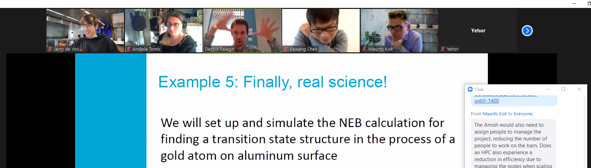

Workshop: Pi Cluster Part II üç∞¬∂
2021 Nov 19 
Due to new covid restrictions we had to move our second part of the workshop online, but this did not keep us from sharing new information and having others learn more about cloud computing! Workshop notes can be found here: https://hackmd.io/lPtoZMKjSJ-oGiGCzObtLQ
you can watch the presentation and read the slides here: